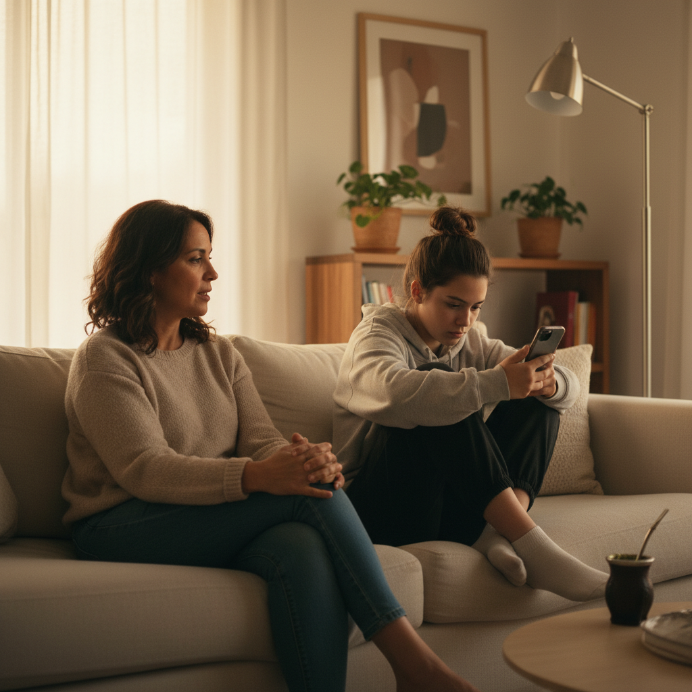

Propuesta
publicitaria
Ciclo de Conferencias + Diplomatura en Educación Emocional y Bienestar
Estrategia de captación, conversión y expansión geográfica
Punto de partida
El problema no es solo la pauta: hay desajuste entre mensaje, público y seguimiento.
EMBUDO REAL DE CONTACTOS
"No es que no nos entendemos.
Interpretamos distinto."
Seres Inside tiene una propuesta sólida, práctica y flexible. La oportunidad está en comunicarla desde problemas cotidianos.
→ De vender formación a mostrar transformación concreta
Público base compartido
Adultos de 30 a 55 años que trabajan con personas, sostienen vínculos familiares activos y buscan herramientas prácticas para mejorar la comunicación y el bienestar emocional.
Profesionales del vínculo
Docentes · Psicólogos · Psicopedagogos · Acompañantes terapéuticos · Coaches · Trabajadores sociales
Padres y madres
Con hijos en edad escolar o adolescente · Interesados en mejorar el vínculo · Buscan evitar discusiones repetidas
Desarrollo personal
Interesados en emociones y vínculos · Ya hicieron cursos similares · Buscan herramientas prácticas
Carolina
Profesional de la educación
CONTEXTO
Día lleno de aula, familias y WhatsApps institucionales. Llega cansada con sensación de "me llevo el aula puesta". Decide de noche o en huecos.
"Necesita herramientas aplicables ya"
NECESIDAD FUNCIONAL
Desescalar conflictos (aula + familias), mejorar comunicación, tener recursos listos para aplicar.
NECESIDAD EMOCIONAL
Bajar estrés y culpa ("no estoy llegando"). Recuperar sensación de control. No quedar expuesta ante familias.
DOLORES
Conflictos con estudiantes y roces con familias · Cansancio, frustración, sobrecarga · "Ya hice cursos similares y no me sirvió"
OBJECIONES
Tiempo: "No llego, me va a quedar colgado" · Plata: salario ajustado · Beneficio: "No da puntaje, ¿para qué?"
DISPARADORES DE COMPRA
Reunión difícil con familias · Episodio de conflicto en el aula · Inicio de ciclo lectivo o evaluaciones
QUÉ LA HACE DECIDIR
Herramienta concreta (no promesa) · Flexibilidad real: "lo hago a mi ritmo" · Comunidad que reduce abandono
MENSAJE CLAVE
"En el aula y en casa pasa lo mismo: no siempre discutimos por lo que pasó, sino por cómo lo interpretamos. ¿Querés una herramienta concreta?"
Valeria
Profesional de la salud
CONTEXTO
Trabaja por turnos con pacientes y familias. Alta carga emocional y complejidad con instituciones educativas. Vive malentendidos familia–escuela–profesional.
"Trabaja con familias y escuela, necesita herramientas serias"
NECESIDAD FUNCIONAL
Mejorar intervenciones y entrevistas con familias. Bajar fricción entre actores. Sostener límites y acuerdos.
NECESIDAD EMOCIONAL
Protegerse del desgaste (burnout) y no "llevarse" los casos a casa. Sostener credibilidad con herramientas serias, no "frases lindas".
DOLORES
Reuniones tensas con padres/madres · Expectativas irreales y presión · Falta de lenguaje común con escuela/equipo interdisciplinario
OBJECIONES
"¿Qué tan sólido es el contenido?" · "¿Es solo para docentes o entiende mi complejidad clínica?" · "Ya vi esto en otros cursos"
QUÉ LA HACE DECIDIR
Programa claro con módulos y evaluación estructurada (portafolio) · Aplicabilidad en trabajo y vida cotidiana · Acompañamiento real
DISPARADORES DE COMPRA
Caso complejo con una familia · Reunión interdisciplinaria frustrante · Sensación de burnout creciente
MENSAJE CLAVE
"Si trabajás con familias y sentís que una misma situación se interpreta distinto y se arma tensión, te compartimos una herramienta para ordenar conversaciones sin escalar conflicto."
Sofía
Coach y facilitadora
CONTEXTO
Consume contenido en redes, arma talleres. Tiene "síndrome de curso repetido": ya escuchó mucho de emociones. Compra cuando ve marco aplicable + comunidad + posicionamiento.
"Busca profundidad, estructura y diferenciación"
NECESIDAD FUNCIONAL
Sumar herramientas para sesiones y talleres. Generar recursos con estructura metodológica sólida.
NECESIDAD EMOCIONAL + SOCIAL
Sentirse más segura y respaldada (lenguaje común, método). Diferenciarse con certificación + propuesta más seria que el mercado.
DOLORES
Mercado saturado de formaciones "light" · Dudas sobre retorno ("¿me aporta algo nuevo?") · Falta de estructura metodológica para enseñar o acompañar
OBJECIONES
"Ya sé de esto" · "¿Es demasiado educativo y poco para mi práctica?" · "¿Me va a servir para gente adulta / equipos?"
QUÉ LA HACE DECIDIR
Promesa de "enseñar, acompañar y vivir" · Teoría + práctica + comunidad · Certificación internacional que la posiciona
DISPARADORES DE COMPRA
Cliente/grupo difícil que la deja sin herramientas · Ver a otra colega certificada · Necesidad de armar un taller con estructura
MENSAJE CLAVE
"Si ya hiciste cursos de emociones y querés algo más aplicable y con estructura, te mandamos el programa y un ejemplo de herramienta para usar en sesiones."
Qué les pasa hoy

Qué ofrece Seres Inside
Formación flexible y online
Aplicación inmediata en la vida y el trabajo
Comunidad y acompañamiento
Recorrido práctico, emocional y transformador
Certificación internacional
No ofrecemos solo contenido: ofrecemos herramientas para vivir y vincularse mejor.
Arquitectura de la estrategia
Primer contacto
Mensaje automático + clasificación del lead
CONFERENCIA
Puerta de entrada
Genera confianza y primer vínculo con la marca
DIPLOMATURA
Profundización y conversión
Formación completa con certificación internacional
WhatsApp como punto crítico
Hoy el 62,86% no responde (521 de 829). La conversión no depende solo del anuncio: depende de la velocidad, claridad y orden del primer contacto.
Clasificación simple del lead
Respuesta rápida y ordenada
SUGERENCIA
Implementar un mensaje automático inmediato para "congelar" el interés del lead mientras se gestiona el contacto humano.
Mejor seguimiento = mejor conversión.
Ciclo de Conferencias
Objetivo
Generar interés, conversaciones y primer contacto con la marca desde una problemática cotidiana y reconocible.
TONO
Humano, cercano, aplicable
MENSAJE EJE
Conflicto, interpretación, vínculo
¿Te pasa que terminan discutiendo siempre?
Entrada emocional → conversación por WhatsApp
Activos disponibles · Conferencias
Plan de contenidos realista según el material disponible hoy.
Diplomatura
Objetivo
Convertir el interés en una formación más profunda, reforzando flexibilidad, practicidad y transformación sostenida.
TONO
Sólido, explicativo, orientado a valor
MENSAJE EJE
Formación flexible, útil y aplicable
PROMESA
Una formación que transforma tu manera de enseñar, acompañar y vivir.
Activos disponibles · Diplomatura
Activos que combinan prueba social, explicación y recordación.
De dónde vienen los contactos hoy
El Top 10 de provincias concentra el 70,69% de la base. AMBA domina con ~36% de los contactos.
Hallazgo clave
Córdoba y Santa Fe muestran mejor conversión observada en la base actual. Son las zonas con mayor potencial de escala.
Oportunidad de cierre
Neuquén tiene alta proporción en "Seguimiento" pero sin conversiones registradas. Indica oportunidad de cierre, no mala audiencia.
Norte: zona con potencial
Jujuy y Salta tienen volumen de contactos. Con mejor seguimiento y mensaje ajustado, pueden activarse como zona de crecimiento.
Expansión geográfica
Centro
Córdoba · Santa Fe · Mendoza
Buen volumen y mejor base para prueba.
Norte
Jujuy · Salta · Tucumán
Ya aparecen en la base y pueden crecer.
Sur
Neuquén · Río Negro · Chubut
Menor saturación y oportunidad de expansión.
Objetivos realistas
45k–70k
personas alcanzadas
80–100
conversaciones estimadas
~3 a 4 por día
−20%
reducción pérdida de leads
6–10
ventas totales estimadas
~7% a 10% de las conversaciones
Objetivos adaptados al tiempo disponible, el material actual y el presupuesto real.
Presupuesto y timing
6 abril — Lanzamiento de pauta
Semana previa — Producción y ajuste de piezas
Conferencia — Empuje fuerte de captación
Post evento — Continuidad en diplomatura
$300.000 – $350.000
La propuesta no busca solo vender una formación.
Busca ordenar un sistema de adquisición para atraer mejor, convertir mejor y crecer con más coherencia.
SERES INSIDE
emociones que inspiran acción